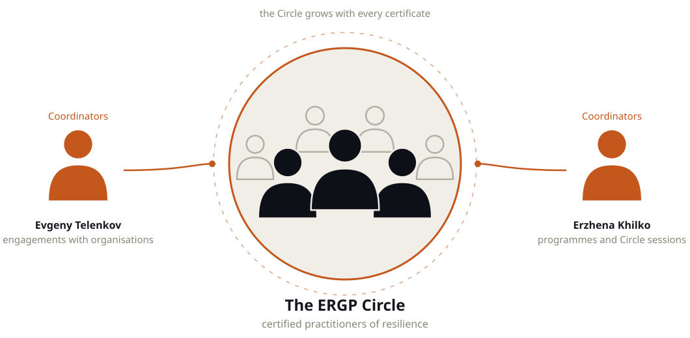

Founders of the community
One partner runs the continuity practice and brings the engagements. The other runs the programmes and keeps the Circle alive.

Best Risk Manager of the Year 2020 (RusRisk). Built business continuity from zero at Nornickel, 20+ continuity plans; risk functions at Beeline, Rosneft, Ernst & Young. CRO of a $20 billion petrochemical megaproject (AGCC, SIBUR) with 200+ construction risk indicators. 15+ continuity programmes delivered, 300+ professionals trained; author of ERGP, SAFE and the continuity library. Deputy chair of the national technical committee on risk management; expertise: BCM and BCP, operational and IT risk, cyber resilience, ISO 22301. In the Circle he chairs the examination board, sets the methodology and matches Circle members to engagements with companies.

Chief Risk Officer of American Express Bank and its payment system operator, 2010–2024; chair of the Risk Committee, member of ALCO and the Credit Committee. Designed the risk governance framework across 12 business units on the Three Lines of Defence model with zero audit findings; ICAAP under Basel III Pillar 2. RCSA across 15+ core processes, KRI monitoring, stress testing, a continuity plan with annual test cycles; regulatory inspections closed with no findings. Earlier: head of risk at Bank of Cyprus Russia, corporate finance at Deloitte, audit at Ernst & Young; cross-border teams across the Nordics, CEE and EMEA. Owns the programme design, cohort schedule and participant experience; certified business psychologist. In the Circle she curates the community, leads the quarterly sessions, invites the examiners and keeps the member directory.
The ERGP Circle
Passing ERGP admits you to the Circle, a private community of certified practitioners coordinated by the founders. One Circle for the Russian, English and Arabic editions of the programme. Small today, it grows with every certificate issued.
Membership is earned once, at the examination, and carries three things with it.

- Knowledge ahead of the market.A quarterly Circle session: one real case, dissected with the founders and the examiners. New modules and regulatory readings reach members before publication. Working templates from live engagements.
- People you can call.A private member directory with specialisation and contacts, open to members only. Direct access to the examiners and to each other. Peers who solve the same problem in the next industry.
- Called upon for real work.We assign Circle members to client engagements: audits, dashboards, continuity systems. Members with standing become examiners and co-authors of modules. Your name in the public register, verifiable by any employer.
- 01Complete the programmeSix modules, 123 chapters, six artefacts of your own.
- 02Pass the tests and present the capstoneSix module tests and a review of the capstone with the examiner.
- 03Receive the certificateAnd the invitation to the Circle with it.
For companies: engage the practice
Need hands for an audit, a dashboard or a continuity system? Tell us the task.
Services for companies →- An audit against ISO 22301 or Bank of Russia requirements.
- A continuity and risk dashboard.
- A continuity system built with your team.
- Who works on the engagement.A Circle member whose level we have examined ourselves. The founders stay on the engagement as coordinators.
Ask a question or book a demonstration
Tell us about your task — we reply within one business day and propose a next step.
Prefer messaging? Telegram · info@risk-place.ru